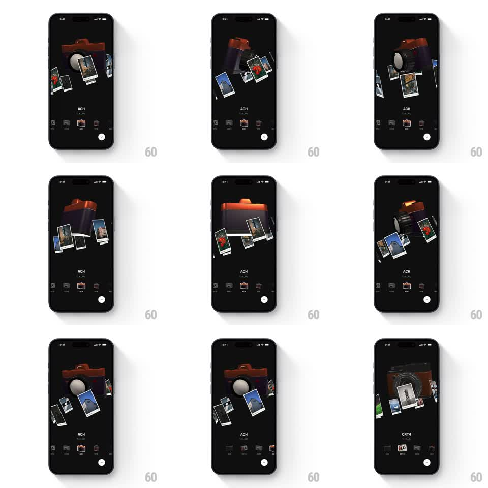

Media
Frame-by-frame

Rebuild this interaction 1:1: Binsoo's camera showcase - selecting a film preset from the bottom row spins the central 3D camera model while polaroid photo cards orbit around it in 3D space.

Rebuild this interaction 1:1: Binsoo's camera showcase - selecting a film preset from the bottom row spins the central 3D camera model while polaroid photo cards orbit around it in 3D space.
## Integration
Integration: stack-agnostic spec - springs given as stiffness/damping, timed motions as duration + curve; map every value to your framework and animation library of choice.
## Scene
Dark showcase screen: a rendered 3D camera (brown leather body, silver lens) center-stage, a ring of small polaroid photos floating around it, the preset name ("ACH") with film format below, a bottom row of preset thumbnails with the active one highlighted, and a shutter button.
## Motion spec
Pattern: preset selection drives a 3D turntable spin with orbiting photo cards.
- On preset tap: the camera rotates around its Y axis (~180 degrees, 700ms, ease-in-out) to a new hero angle, with slight X tilt settling (spring ~200/16).
- The polaroids orbit the camera continuously (slow, one revolution ~12s) and bank/tilt with their orbit position (rotateZ +/- 10 degrees, perspective scale 0.7-1.1 by depth).
- On selection the orbit ring gets a small impulse (rotation velocity bump that eases back over 1s).
- Preset label and format crossfade (200ms); the bottom-row highlight slides to the tapped thumbnail (spring ~300/20).
## Calibration
- Perspective must be real: far polaroids shrink and dim, near ones grow and sharpen.
- The camera's materials catch light as it turns - reflections travel with the spin.
## Reduced motion
Camera crossfades between angles; polaroids hold a static arrangement.
## Don't miss
- Polaroids never intersect the camera - the orbit radius clears the lens at every angle.
- The spin direction follows the shortest arc to the new preset's angle.